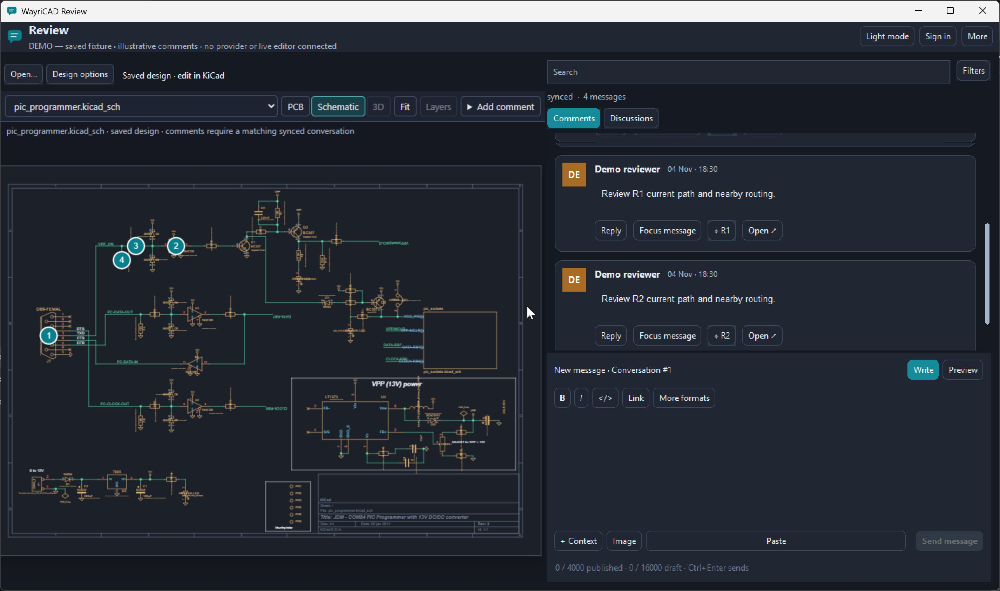
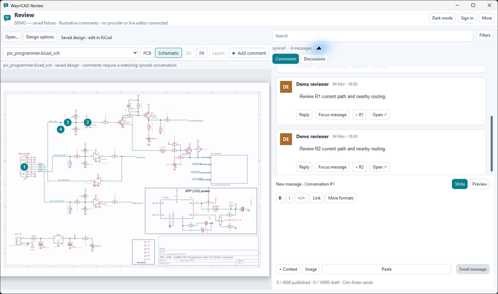
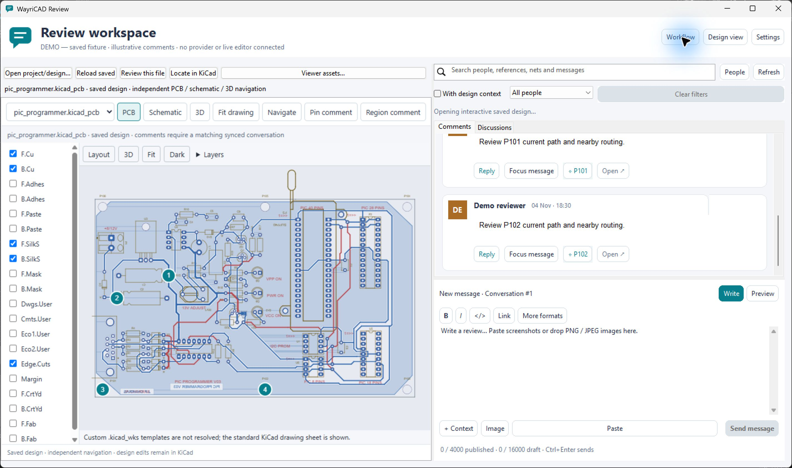
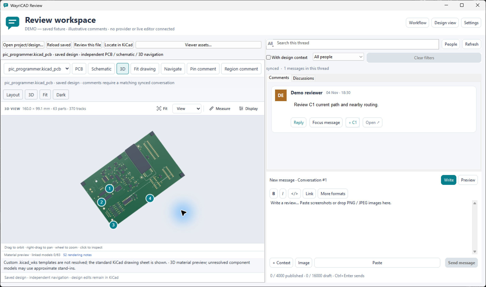
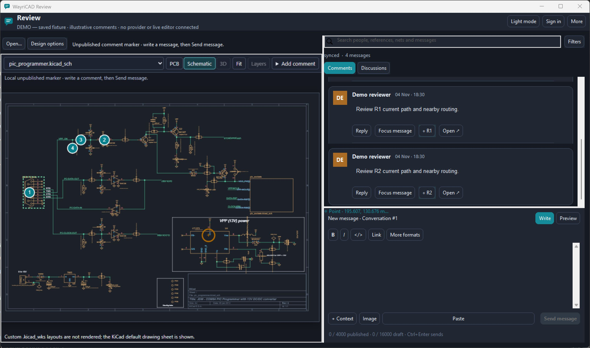

1. Prepare and open Review
- 1 · Install
Install the 4.4.0 Review package through KiCad Plugin and Content Manager, then restart KiCad. Published 4.3.0 does not contain this view.
- 2 · Check host
Open Review from the intended KiCad editor. Confirm that its IPC/API settings and managed Python runtime work as described in README and integration contract. A source import alone does not verify editor attachment.
- 3 · Supply viewer
Choose Design options → Viewer assets… or set
WAYRICAD_REVIEW_VIEWER_ROOTbefore launch. The separately supplied KiView source assets are externally supplied under their own license and are not bundled with this release. - 4 · Save & commit
Save the PCB or schematic and commit it. Review checks the chosen file against an immutable commit. It cannot represent unsaved KiCad edits.
The setup sequence above is a guide diagram, not an application screenshot. The current viewer uses a temporary local loopback host for allowlisted asset bytes and closes it with Review.
Install the package in KiCad 10
- In KiCad Manager, open Plugin and Content Manager → Repository → Manage…. Add
https://raw.githubusercontent.com/wayri/WayriCAD/develop/pcm/repo.json. - Select WayriCAD Plugin Repository → Plugins → WayriCAD Review → Install. Open Pending → Apply Pending Changes. Alternatively, download the release's
WayriCAD-review-comments-4.4.0-PCM.zipand choose Install from File…; do not unpack the PCM ZIP first. - Open Preferences → Plugins in KiCad Manager. Enable Enable KiCad API and select a valid KiCad Python interpreter. Wait for first-launch private runtime preparation to finish.
- Restart PCB Editor, open the intended project through KiCad Manager, and save its board. Choose Tools → External Plugins → WayriCAD Review or its IPC toolbar action. The saved-board menu launch supplies saved file context; the IPC action is needed for supported live PCB object navigation.
Choose the complete viewer source folder
Obtain the separately licensed KiView viewer source from its supplier. Keep its notices and folder structure intact. For the current source layout, choose the parent folder containing src/kicad-viewer.mjs, src/viewer-chrome.mjs, engine/, licenses/ and the license/notices files. Choose that folder in Design options → Viewer assets…. Do not select the src subfolder, a single JavaScript file, or a minified browser bundle. Review checks its required modules and reports missing or incompatible files.
On Windows, this view needs the system Edge WebView2 runtime. A missing backend or invalid asset folder produces an error; the conversation remains usable. Linux/macOS native viewer acceptance remains unverified. This package does not install a browser extension or download renderer code automatically.
2. Find your way around the window
The top bar holds the Light mode / Dark mode switch, Sign in or Account, and More. Below, the saved design is on the left and the conversation on the right. More contains Review settings, this User guide, refresh, reviewer highlights, workflow, design visibility, and sign-out. Search and Filters sit above the comment cards. The composer stays below them.


- A · DesignUse Open…, Design options, document selector, PCB/Schematic/3D, Fit, and Layers.
- B · ConversationUse Comments or Discussions, Search, Filters, Reply, and Focus message.
- C · ComposerWrite or Preview, add context or an image, then explicitly choose Send message.
A–C are explanatory labels for the guide; they are not labels printed in the application.
3. Sign in through your browser
- For GitLab, first open More → Review settings… → Provider and choose
gitlaband its HTTPS origin. GitHub is the default. Choose Sign in, then Sign in browser. - Review opens the provider verification page and shows a one-time code. If the browser does not open, use the displayed verification address; Copy code copies only the code.
- Approve the device request in your provider account and return to Review. Review verifies that account before showing Account.
GitHub defaults to public repository access plus Discussions write access. The optional private-repository checkbox requests the broader repo write scope. GitLab needs a registered OAuth application with device grant enabled; a self-hosted GitLab needs a public client ID through WAYRICAD_REVIEW_GITLAB_CLIENT_ID. No token paste or terminal login is needed for desktop use.
The Review credential stays in process memory for at most eight hours, or less if the provider expires it earlier. This is an absolute deadline; activity does not extend it. Closing Review loses sign-in. Expiry and More → Sign out block reads, sending, uploads, and native navigation while preserving drafts. Sign-out affects Review only, not your browser, KiView extension, or shared CLI session.
This describes the implemented flow. The screenshots in this guide do not show a live provider sign-in, and no live OAuth acceptance is asserted.
4. Match the saved file and conversation
- ProviderOpen More → Review settings…. Choose GitHub or GitLab and its HTTPS host where applicable. Sign in.
- Saved designChoose the saved file. Confirm repository, repository-relative file path, and full immutable commit. The local file must match that commit, allowing normal LF/CRLF checkout conversion.
- ConversationChoose issue, pull request, merge request, or existing GitHub Discussion and its number. Let the provider refresh succeed before using provider-backed markers.
Use Open… for a saved .kicad_pcb or .kicad_sch, then choose the needed document in the selector. Design options → Review this file connects that exact selected file. A paired PCB/schematic and schematic hierarchy may be available in the selector; switching files requires matching the conversation to the file you review. A saved-file SHA-256 guards loaded geometry and later actions. The current document catalog never treats a preview of unsaved edits as committed evidence.
| Settings field | What to enter | Example |
|---|---|---|
| Local Git worktree | The repository checkout containing the committed design. | C:/Projects/Example |
| Design path inside repository | Use the file path relative to that checkout. | hardware/controller.kicad_pcb |
| Full saved commit ID | The complete immutable commit, not a branch name. The saved-design picker can fill it. | Your full Git commit ID |
| Repository / GitLab project | The remote project path, without its HTTPS origin. | team/controller or a GitLab subgroup path |
| Comments conversation type | issue for an issue, pull for a GitHub PR, or merge_request for a GitLab MR. | pull |
| Issue / PR / MR number | The existing conversation's displayed number; do not paste its full URL. | 12 |
| GitHub Discussion number | An existing Discussion's displayed number. This is separate from Comments. | 7 |
The example values are illustrative. Select Choose saved PCB or schematic… on the Saved design step to fill the worktree, file and revision, then inspect them. Continue through the Conversation step and connect. A successful provider refresh enables matching locations; simply opening the drawing does not connect its conversation.
Saved files and online comment exchange
| Format | Review behavior |
|---|---|
Saved .kicad_pcb / .kicad_sch | Open the saved file and, where available, choose its paired design or schematic hierarchy file in the document selector. Each selected file has its own revision identity. |
kicad-review:v1 Markdown marker | Shares point, region and object context with the online KiView review format when provider, repository, full commit and file match. |
| Online sidecar JSON | The online client can convert it to shared Markdown markers. Desktop Review does not directly open arbitrary sidecar JSON or edit Git files to import it. |
5. Explore PCB, schematic, and 3D
Use PCB or Schematic for the selected saved document, pan and zoom within the embedded view, and choose Fit to frame it. For PCB, expand Layers to change visible layers or choose 3D. These controls navigate Review's independent view. They do not change KiCad's live viewport, sheet, selection, or layer state. Keep editing in the main KiCad editor.


Object-linked PCB comments can ask the originating editor to locate an object when the supported IPC context and exact saved revision are available. Native schematic selection and native KiCad canvas overlays are unavailable.
6. Draft a pin or region, preview, then send
- With the selected 2D file matched to a synced conversation, choose Add comment and its pin or region option. Place the point, or draw the region, on the saved view. You can also use + Context in the composer for a selected PCB object or numeric board-top region in millimetres.
- Review carries the location into a local draft. Write your message, choose Preview to inspect the formatted text and context, and return to Write to correct it.
- Choose Send message or Ctrl+Enter only when ready. The provider response and subsequent readback establish publication; a draft pin alone never does.

A marker on a synced card opens its message or thread. The saved design and source hash must still match before Review permits navigation or publication. If you switch file or commit, reconnect the intended conversation rather than carrying an old location forward.
7. Follow threads and add evidence
| Control | Use |
|---|---|
| Comments / Discussions | Comments shows the selected issue, PR, or MR general conversation. Discussions shows an existing GitHub Discussion and its native threads. |
| Reply / Focus message | Reply to a card or focus that message with its replies; return to all messages without losing your draft. |
| Search / Filters | Find message or design text. Expand Filters for author and design-context choices. Search stays within a focused thread. |
| Image | GitLab: inspect and approve each upload preview before sending its link. GitHub: use its browser editor for attachments, then refresh Review. |
| More → Refresh comments | Fetch the authoritative conversation, including edits and deletions. Failed reads keep the previous feed visibly stale. |
Review also supports pasted or dropped PNG/JPEG images in the composer, with preview and removable pending chips. GitLab uploads are a separate approved operation; if a later post fails, inspect the provider before trying again. Reviewer highlighting is a visual aid, not online presence. Open ↗ opens the authoritative provider message.
Automatic sync: Review polls the provider about every eight seconds while its window is visible, including while you work in the main KiCad editor. Only one request runs at a time. Failed reads back off to at most two minutes; hidden, minimized, closed, or signed-out windows do not poll. Returning to the window requests an immediate refresh. A complete provider snapshot updates edited and deleted comments. A failed read leaves the feed visibly stale, removes canvas marker authority, and keeps your unpublished draft.
8. Refresh, troubleshoot, and know the limits
| What you see | What to check |
|---|---|
| Viewer assets unavailable | Supply a readable KiView asset root through Viewer assets… or WAYRICAD_REVIEW_VIEWER_ROOT. Review does not bundle those assets yet. |
| Sign-in expired or canceled | Choose Sign in again. The eight-hour maximum does not slide with activity; drafts stay local. |
| Comments stale or marker unavailable | Use More → Refresh comments, confirm the provider read succeeded, and check the selected provider, repository, full commit and file path. |
| Saved design changed | Save and commit the intended revision, reload the saved design, then reconnect its matching conversation. Unsaved editor state cannot be reviewed as that commit. |
| Location does not open in KiCad | Check the originating PCB editor connection, exact saved revision, and supported object UUID. Schematic selection is not provided. |
| Ambiguous send failure | Refresh and inspect the provider thread before retrying. Review does not automatically repeat a write. |
Review comments do not edit PCB or schematic data. The embedded viewer has no live viewport or unsaved-edit synchronization with KiCad. The 3D view may use stand-ins and cannot draft a verified 3D screen point. Inline PR diff comments, review summaries, shared cursors, presence, and native KiCad canvas overlays are outside this workflow.
For exact contracts and test scope, see Review README, integration contract, validation record, and compact offline help.